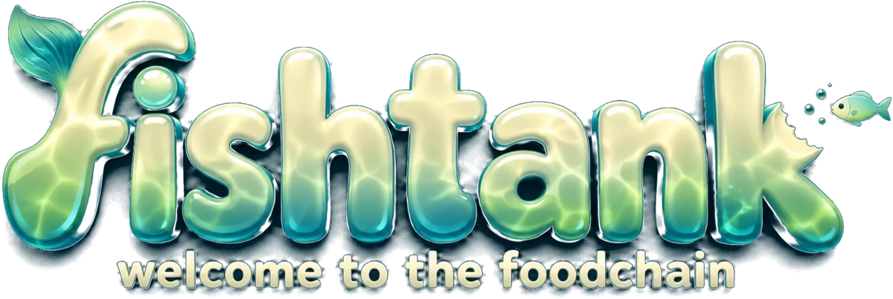

Fisken din · dra for å snu

Navnet ditt
Velg fisk
‹
›
Spill
↗
Bli med
→
SPRÅK
Norsk
English
Tilbake til arkaden
W
S
fram / bak
A
D
til siden
/
Musa sikter · Klikk for å låse musa · Esc for meny
Venstre tommel skyver deg fram, slipp for å stoppe
/
dra på høyre side for å se deg rundt
/
du svømmer dit du ser
…
MASSE
8.0
POENG
0
TID
5:00
BLI MED I ET SPILL
Spillkode
Bli med
→
Angre
Tilbake
Venter på stimen
DEL DENNE KODEN
Kopier koden
SPILLETID
·
2 min
NIVÅ
·
Middels
Jeg er klar
Start
→
Gå ut
Nytt spill
→
Gå ut
MENY
GRAFIKK
LYD
MUSIKK
·
55
EFFEKTER
·
90
SPRÅK
Norsk
English
Fortsett
Avslutt spillet
Tilbake til arkaden
SKYV FOR Å SVØMME · SLIPP FOR Å STOPPE
DRA FOR Å SE · DU SVØMMER DIT DU SER
Snu telefonen på siden
Fishtank kan bare spilles med telefonen på tvers.
Eller spill i fullskjerm
→